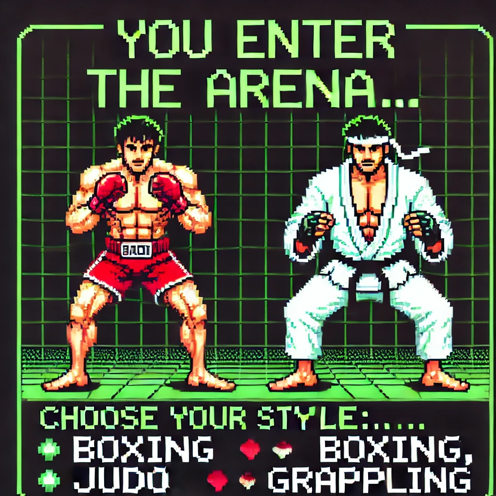

Text Adventure
Objectif
Dans le cadre d'un projet académique, j'ai développé un jeu d'aventure textuel en Python inspiré de Baki. Le joueur choisit un style de combat parmi 7 options et doit collecter 3 badges en explorant différentes zones. Le jeu intègre un système de points de vie et d'inventaire, avec des interactions spécifiques selon les lieux visités.
Documents
Technologies
Python
Compétences acquises
- Mettre à disposition des utilisateurs un service informatique
- Organiser son développement professionnel